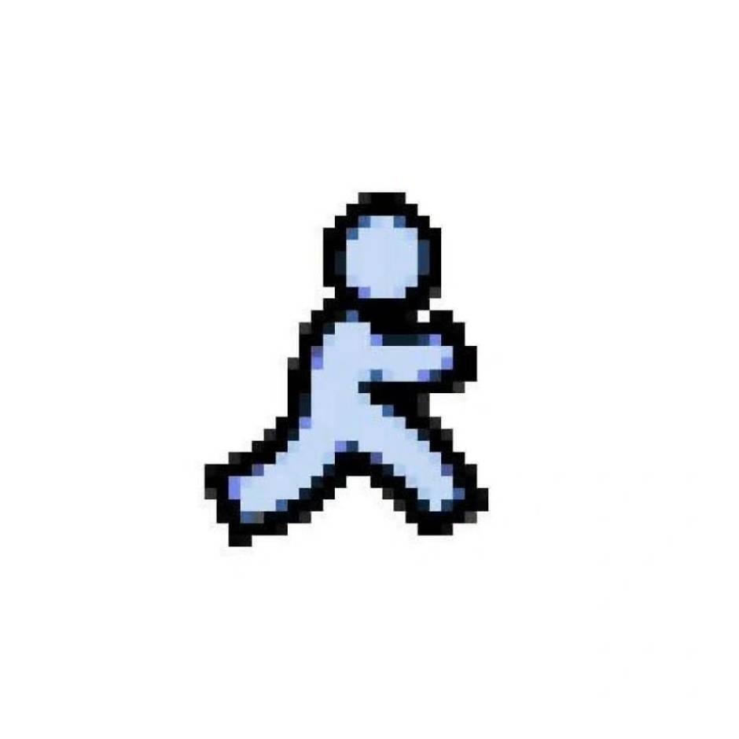

欢迎来到我的博客！记录每一次构建。
不是教程，只是一个开发者试图把脑子里的东西放到屏幕上。记录开发道路上的所思所悟。
不是教程，只是一个开发者试图把脑子里的东西放到屏幕上。记录开发道路上的所思所悟。

基于 Next.js、FastAPI、SQLite、SSE 和 DeepSeek API，复盘一个求职投递 Agent 平台的完整构建过程。
用 TypeScript、Three.js 和 Vite 构建原创森林法术生存游戏，记录连续移动、攻击特效、角色选择和浏览器验证。
基于微信小程序低功耗蓝牙 (BLE) 技术的心率实时监测工具。
从 React + FastAPI 到 DeepSeek + Vercel，记录一次可在线演示的全栈 AI 项目构建过程。
基于 React、Vite、Framer Motion 和 HTML Audio API，复盘一个暗色毛玻璃音乐播放器的构建过程。
一个对技术充满好奇的开发者。这是我的公开笔记本。